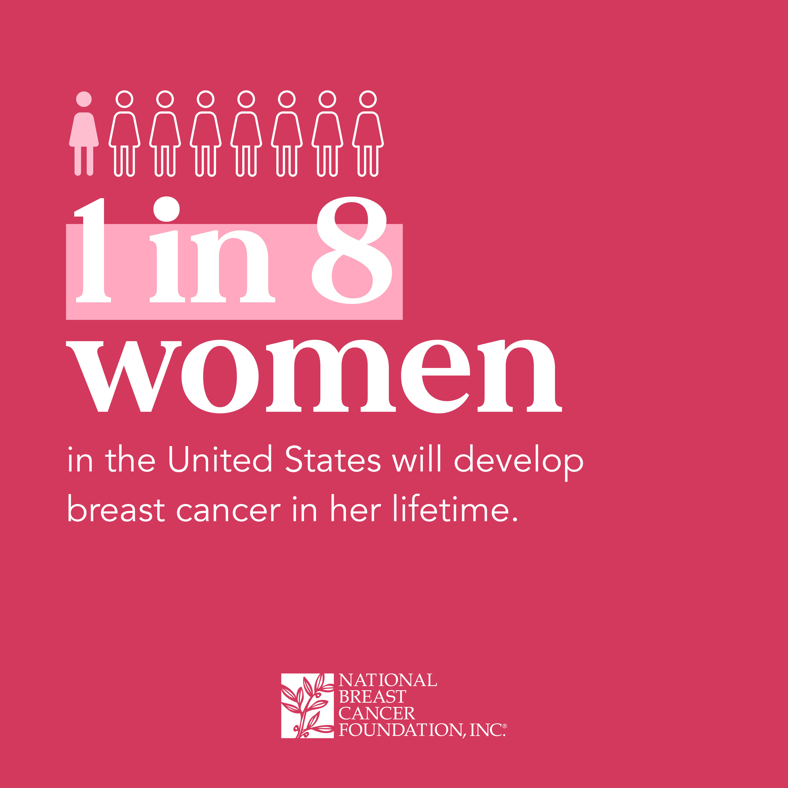
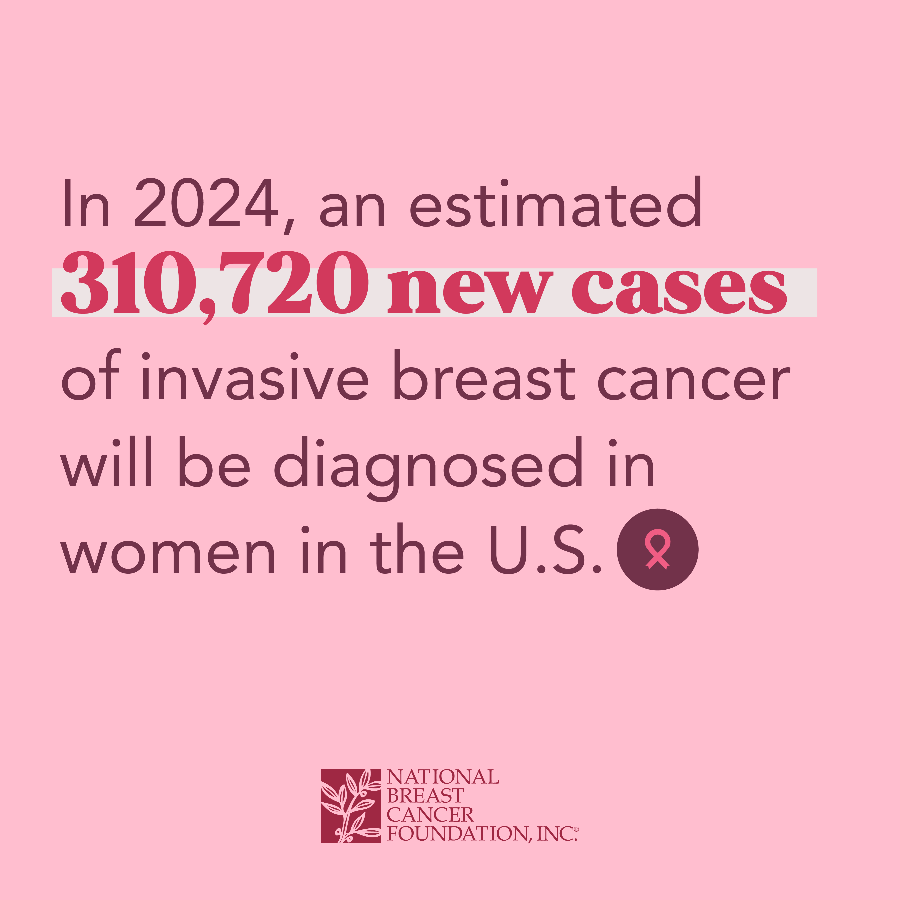
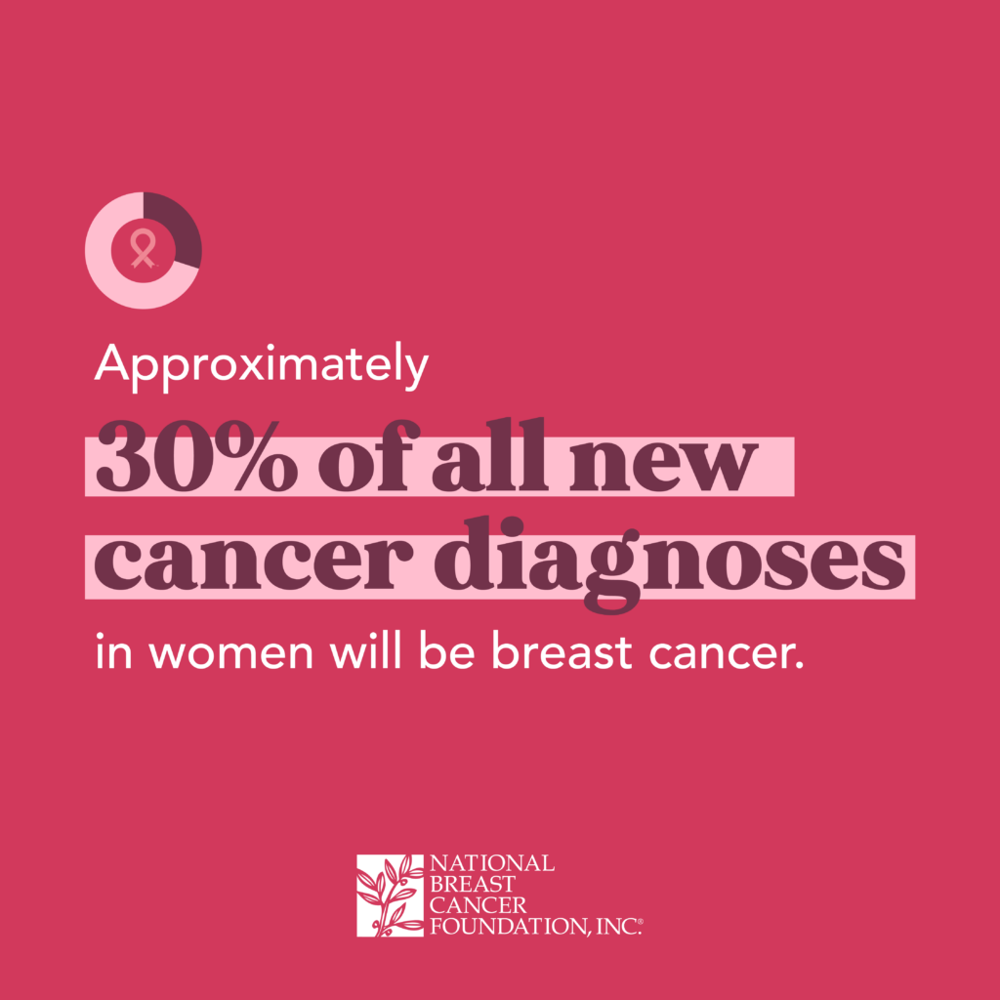

About Breast Cancer:
Symptoms, Treatments, and General Information
Information provided by Cleveland Clinic
Breast cancer is a disease caused when a cancerous breast cell multiplies and becomes a tumor, or a small lump, in the breast. Some causes of breast cancer include:
- Drinking
- Smoking
- Being 55 or older
- Obesity
- Genetics
- Exposure to radiation
Breast cancer comes in stages 0-4:
- Stage 0 - A lump in the breast, bloody discharge from the nipple, or changes in shape or texture.
- Stage 1 - Cancerous cells begin to infect nearby breast tissue.
- Stage 2 - The cancerous cells have formed a tumor, which usually spans from 2cm to 5cm wide.
- Stage 3 - Breast cancer infects nearby tissue and lymph nodes.
- Stage 4 - Cancer spreads to other areas outside the breast.
Breast cancer can be treated in mutliple ways, including:
- Mastectomy
- Lumpectomy
- Chemotherapy
- Radiation Therapy
- Immunotherapy
Where can I donate?
You can donate through multiple breast cancer fundraisers, such as:
How do I volunteer?
You can volunteer through multiple breast cancer awareness programs, such as:
